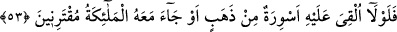
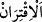
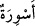
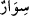
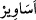
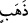

İşte ey insan, ey Müslüman; sen şimdi İblis’in ve Firavun’un hâlini gördün ve bildin.
Artık nefsini ıslah edip şeytanı şeytan, Firavun’u Firavun yapan rezil sıfatlardan
temizlenmeye gayret göster. Allah’tan o yüce huzura çıkmadan önce bizlere inâyet ve
hidâyetle yardım etmesini diliyoruz.
53. «(Eğer doğru söylüyorsa) ona altın bilezikler verilmeli veya yanında ona
yardımcı melekler gelmeli değil miydi?»
“(Eğer o, doğru söylüyorsa) ona altın bilezikler verilmeli” hazinenin anahtarları
kendisine teslim edilmeli “veya yanında” kendisine yardım eden, onu destekleyen ve
doğruluğuna şâhidlik yapan “melekler gelmeli değil miydi?”
Râgıb şöyle demiştir: “/iktirân” kelimesi, iki veya daha fazla eşyanın bir arada
toplanması konusunda aynen izdivaç kelimesi gibidir.
“Ona altın bilezikler verilmeli” sözünü bir sitem, azar ve kınama mâhiyetinde
söylemişlerdir.
“/esviretün” kelimesi “/sivâr” kelimesinin çoğuludur. “/esâvîr”
kelimesindeki “yâ” harfine mukabil kelimenin sonuna “ta” getirilmiştir. Yani “esvâr”
kelimesindeki “elif”e mukâbil gelen “yâ”nın yerine “ta” gelmiştir. Bunun benzerleri
“zenâdika” ve “betârika” kelimeleridir. Bu kelimelerin sonlarına gelip “ha” olarak
okunan “ta”lar “zenâdîk” ve “betârîk” kelimelerindeki “yâ”dan ivaz olarak gelmiştir. Bu
“yâ”lar da tekillerindeki zındîk ve bıtrîk kelimelerindeki “yâ”dan bedel gelmişti.
Kamus’ta belirtildiğine göre “sivâr” yahut “süvâr” kalp demektir. Üsvâr gibidir. Çoğulu
ise “esvire”, “esâvîr” ve “esâvire” dir. Müfredât’da “süvâru’l-mer’eti”/kadının
bilezikleri diye geçmektedir. Kelimenin aslı “düstüvâre” olup bazılarına göre aslı
farsça iken sonradan Arapçaya katılmıştır.
“/zeheb”/altın eriyen, saf ve sarı olup diğer cisimlere göre daha ağır olan kıymetli
bir madendir. Mânâ şöyledir: Mûsâ’nın üzerine altın bilezikler atılmalı; şâyet Mûsâ
peygamberlik sözünde doğru ise Mısır’ın mülk ve hazinelerinin anahtarı ona verilmeli
değil mi ki, onun durumu benim durumumdan daha iyi olsun? Tabiî ki bu arada bu
hazineleri Mûsâ’ya gökten atacak olan Mûsâ’nın Rabbidir. Altın bilezikleri atmak, mülk
ve hazinelerin anahtarlarını atmaktan yani mülkün anahtarları mesâbesinde olan
sebeplerin kendisine verilmesinden kinâyedir. Çünkü onlar bir adamı ululayıp efendi
olarak kabul ettiklerinde onun reislik ve efendiliğine alamet olarak koluna altın
bilezikler, boynuna yine altın gerdanlıklar takarlardı. Bu yüzden Firavun, “Eğer Mûsâ
doğru söylüyor, halkın önderlik ve yöneticiliğine adaysa onun tanrısı neden kendisine
bilezik vermemiş” itirazında bulunmuştur.